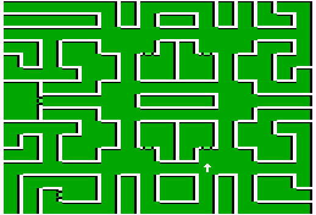

Middlegate Cavern
| X | Y | Event |
| 8 | 14 | Green interleave one letter after another 2-1-3-4 |
| 3 | 10 | Seek earth encasement at 14,1 in the proper plane. Do walk about first. |
| 15 | 2 | Water Disc rest at 15,0 in Castle Xabran |
| 1 | 0 | X marks the spot maybe you should search here |
| 3 | 6 | Win the blackest battle and you are 1/2 way to an audience with Queen Lamanda |
| 0 | 0 | Castle Pinehurst keeps a multitude of J-26 Fluxers at 7,6 |
| 15 | 8 | Stairs to Middlegate |